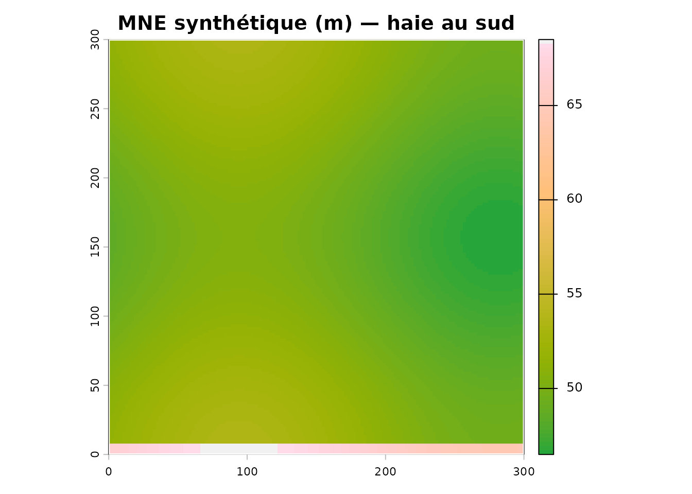
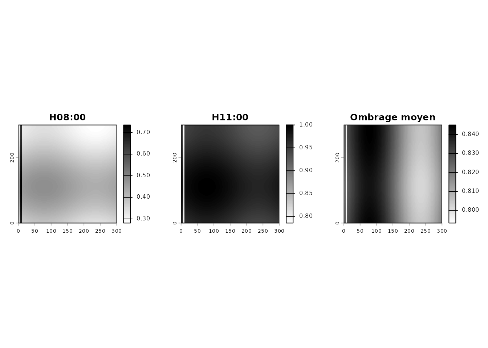
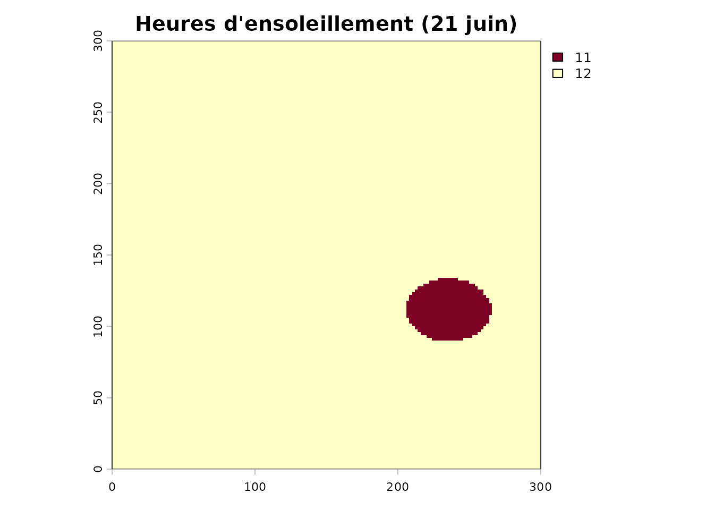
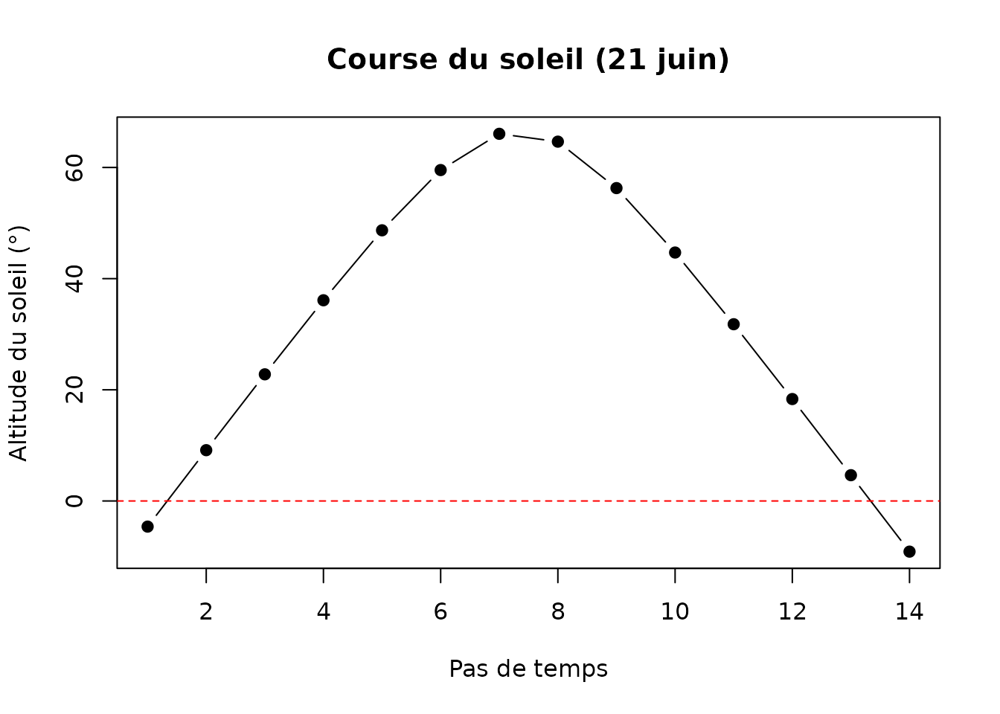
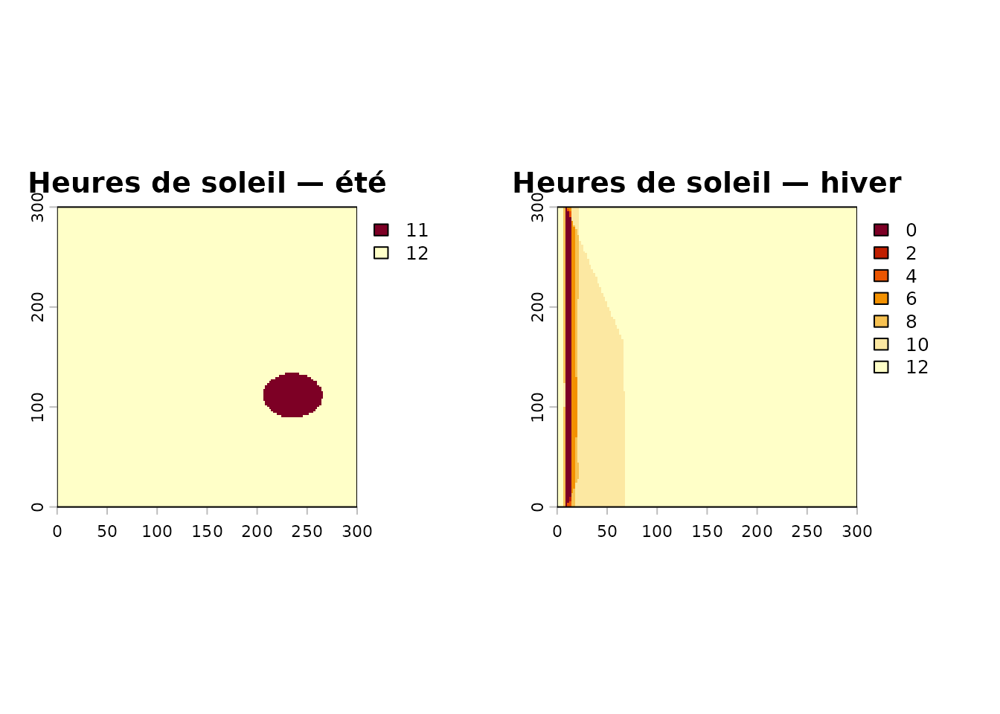
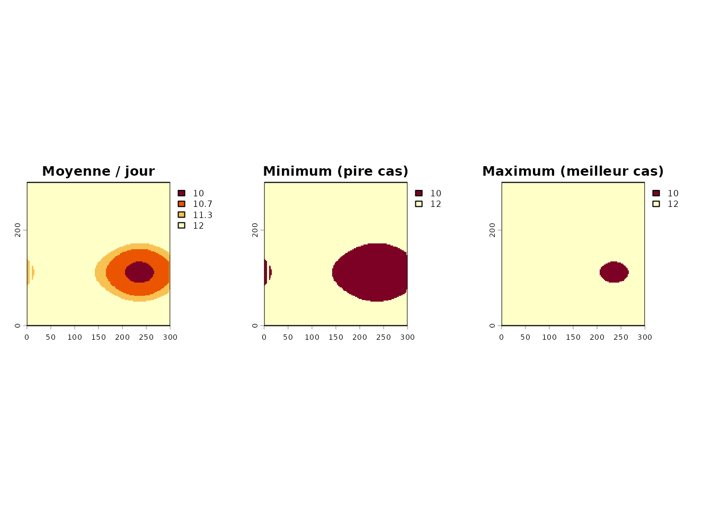
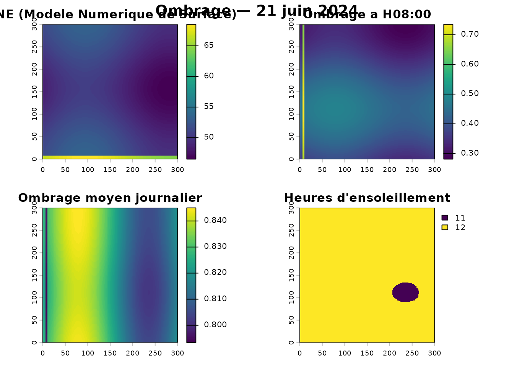

Principe
L’ombrage projeté est calculé par lancer de rayons (raycasting) sur le Modèle Numérique d’Élévation (MNE), pour chaque position du soleil de la journée. On obtient, par pixel :
- une valeur d’ombrage entre 0 (ombre) et 1 (plein soleil) ;
- le nombre d’heures d’ensoleillement.
Pour rester reproductible, on simule un champ de 300 m × 300 m bordé d’une haie brise-vent au sud, dans un MNE synthétique.
Un MNE synthétique avec une haie
mne <- terra::rast(nrows = 150, ncols = 150,
xmin = 0, xmax = 300, ymin = 0, ymax = 300,
crs = "EPSG:32618")
xy <- terra::xyFromCell(mne, 1:terra::ncell(mne))
terrain <- 50 + 2 * sin(xy[, 1] / 60) + 1.5 * cos(xy[, 2] / 50)
# haie de 15 m le long du bord sud
haie <- ifelse(xy[, 2] < 8, 15, 0)
terra::values(mne) <- terrain + haie
names(mne) <- "MNE"
champ <- st_as_sf(st_sfc(
st_polygon(list(matrix(c(0, 0, 300, 0, 300, 300, 0, 300, 0, 0),
ncol = 2, byrow = TRUE))),
crs = 32618))
terra::plot(mne, col = hcl.colors(100, "Terrain"),
main = "MNE synthétique (m) — haie au sud")
plot(st_geometry(champ), add = TRUE, border = "white", lwd = 2)
Ombrage au solstice d’été
zscale exagère (ou atténue) la hauteur verticale pour
ajuster la longueur des ombres ; max_distance limite la
portée du lancer de rayons.
ombrage <- calculer_ombrage(
polygone = champ,
date = "2024-06-21",
intervalle_heures = 1,
mne = mne,
zscale = 2,
max_distance = 150
)
par(mfrow = c(1, 3), mar = c(2, 2, 3, 2))
terra::plot(ombrage$ombrage_par_heure[[1]], main = names(ombrage$ombrage_par_heure)[1],
col = grey(100:0 / 100))
terra::plot(ombrage$ombrage_par_heure[[4]], main = names(ombrage$ombrage_par_heure)[4],
col = grey(100:0 / 100))
terra::plot(ombrage$ombrage_moyen, main = "Ombrage moyen",
col = grey(100:0 / 100))
Heures d’ensoleillement
terra::plot(ombrage$heures_ensoleillement,
main = "Heures d'ensoleillement (21 juin)",
col = hcl.colors(100, "YlOrRd"))
plot(st_geometry(champ), add = TRUE, border = "grey40")
# Position du soleil au fil de la journée
info <- ombrage$info_soleil
plot(seq_len(nrow(info)), info$altitude, type = "b", pch = 19,
xlab = "Pas de temps", ylab = "Altitude du soleil (°)",
main = "Course du soleil (21 juin)")
abline(h = 0, lty = 2, col = "red")
Été vs hiver
Le même MNE, deux dates : l’ombre est bien plus longue et basse en hiver.
hiver <- calculer_ombrage(champ, date = "2024-12-21", intervalle_heures = 2,
mne = mne, zscale = 2, max_distance = 150)
par(mfrow = c(1, 2), mar = c(2, 2, 3, 2))
terra::plot(ombrage$heures_ensoleillement, main = "Heures de soleil — été",
col = hcl.colors(100, "YlOrRd"))
terra::plot(hiver$heures_ensoleillement, main = "Heures de soleil — hiver",
col = hcl.colors(100, "YlOrRd"))
Sur une période
calculer_ombrage_periode() agrège plusieurs jours et
fournit moyenne, min et max.
periode <- calculer_ombrage_periode(
polygone = champ,
date_debut = "2024-06-01",
date_fin = "2024-06-30",
intervalle_jours = 10,
intervalle_heures = 2,
mne = mne, zscale = 2, max_distance = 150
)
par(mfrow = c(1, 3), mar = c(2, 2, 3, 2))
terra::plot(periode$heures_ensoleillement_moyen, main = "Moyenne / jour",
col = hcl.colors(100, "YlOrRd"))
terra::plot(periode$heures_ensoleillement_min, main = "Minimum (pire cas)",
col = hcl.colors(100, "YlOrRd"))
terra::plot(periode$heures_ensoleillement_max, main = "Maximum (meilleur cas)",
col = hcl.colors(100, "YlOrRd"))
Vignette de synthèse
calculer_ombrage_visualisation(ombrage, titre = "Ombrage — 21 juin 2024")
Avec un MNE LiDAR réel
champ <- st_read("mon_champ.shp")
# calculer_ombrage() télécharge le MNE automatiquement si non fourni
ombrage <- calculer_ombrage(
polygone = champ,
date = "2024-06-21",
intervalle_heures = 1,
zscale = 1, # 1 = échelle réelle
max_distance = 1000
)À retenir
| Paramètre | Effet |
|---|---|
date |
Position du soleil (azimut, altitude) |
intervalle_heures |
Pas de temps du calcul |
zscale |
Longueur des ombres (exagération verticale) |
max_distance |
Portée du lancer de rayons |
seuil_ensoleillement |
Seuil pour compter une heure comme ensoleillée |
Pour un paysage réel, on utilise
telecharger_lidar(mne = TRUE) afin d’obtenir un MNE
incluant arbres et bâtiments.